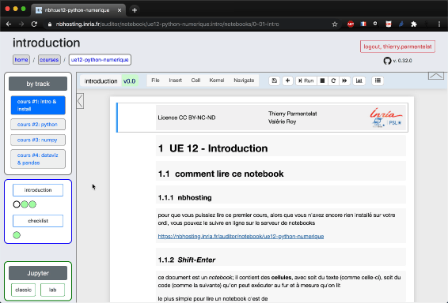
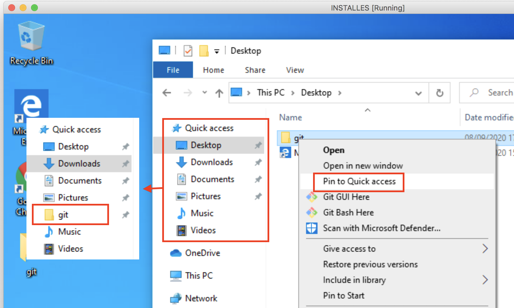

UE 12 - Introduction¶
comment lire ce notebook¶
nbhosting¶
pour que vous puissiez lire ce premier cours, alors que vous n’avez encore rien installé sur votre ordi, vous pouvez le suivre en ligne sur le serveur de notebooks
https://nbhosting.inria.fr/auditor/notebook/ue12-python-numerique
Shift-Enter¶
ce document est un notebook; il contient des cellules, avec soit du texte (comme celle-ci), soit du code (comme la suivante) qu’on peut exécuter au fur et à mesure qu’on lit
le plus simple pour lire un notebook c’est de
sélectionner une cellule (avec la souris)
taper Maj-Entrée (ou Shift-Return sur un clavier anglais)
ça exécute la cellule courante et ça passe à la suivante; essayez…
# ma première cellule de code contient
# un commentaire
# et une commande toute simple
# qui affiche un message
echo "hey there !"
hey there !
vous avez dû provoquer l’affichage de hey there ! comme résultat de l’exécution de la
cellule juste au dessus de celle-ci;
continuez la lecture en faisant ‘Maj-Entrée’
niveaux de lecture¶
parfois on verra du contenu un peu technique, qui s’adresse plutôt aux élèves qui ont déjà
des connaissances poussées
on utilisera alors un code de couleur, c’est comme pour les pistes de ski :
vert : niveau de base (mode par défaut)
bleu : niveau intermédiaire
rouge : niveau avancé
lorsqu’il n’y a pas de couleur, c’est comme si c’était vert, ça s’adresse à tout le monde
si c’est la tête de chapitre ou section qui est en couleur, cette couleur s’applique à toute la section; dans ce cas on met en vert, le cas échéant, la tête de section suivante
table des matières¶
vous pouvez en principe activer la tables des matières en cliquant sur ce bouton :
(sinon, voyez la toute dernière section)

readthedocs¶
je vous signale enfin que les supports du cours sont disponibles également sur
https://ue12-python-numerique.readthedocs.io/
ce site est accessible depuis Internet sans authentification, son contenu est statique (i.e. on ne peut pas modifier le contenu des cellules de code, ni rien exécuter) … mais on peut y faire des recherches qui s’appliqueront sur tous les notebooks d’un coup et ainsi retrouver des informations.
objectifs¶
l’approche pédagogique vise en premier lieu à vous mener à l’autonomie en ce qui concerne l’utilisation des ressources digitales; c’est pourquoi nous ne sommes pas en salle informatique comme ça a pu se faire à une époque; l’objectif est que vous sachiez à terme utiliser uniquement votre ordinateur pour travailler (ce qui a été très pratique lors du confinement surprise l’année dernière).
ce cours d’introduction vise à présenter, et à vous faire installer, les outils de base pour le cours d’informatique; il ne présente aucune difficulté mais vous êtes invité·e malgré tout à le suivre avec une grande attention car tous ces éléments sont cruciaux pour la suite
objectifs globaux¶
pour le cours d’informatique de 1ère année :
prise d’autonomie
par rapport à un ordinateur personnel
par rapport au numérique et à la programmation
focus sur quelques outils (du moment)
pour les mathématiques, le machine-learning et autres enseignements
Python - numpy - pandas - matplotlib
notebooks Jupyter
workflow de gestion de projets de développement
git & github
approfondissement langage (un parmi 3)
Python
C++
Java
culture informatique
notions d’algorithmique et de complexité
notions sur les systèmes d’exploitation des ordinateurs (OS)
rudiments de programmation Web
rudiments sur programmation parallèle
rudiments sur l’utilisation du réseau
projet informatique
en équipe
posé par une personne extérieure à l’équipe d’enseignants
objectifs du premier module¶
s’agissant du premier bloc de 4 x 3h :
c’est un pré-requis pour autres cours
(notamment mathématiques et machine-learning)4 parties
installations (ce cours-ci)
le langage Pythonå
tableaux et programmation vectorielle (
numpy)préparation (
pandas) et
visualisation (matplotlib) des données
objectifs aujourd’hui¶
pour ce premier cours d’introduction/installation
survol ultra-rapide des concepts de base (simple, basique)
survol rapide et installation des outils de base
OS, terminal, dossiers et fichiers
éditeur de code, markdown
git (ultra-light)
Python, Jupyter
être capable de rapatrier le cours sur votre ordi, et d’y exécuter les notebooks
Notez que
le cours est coopératif, et pas compétitif
ceux qui savent déjà aident leurs camaradesvoyez aussi la checklist des compétences requises - notebook
0-98-checklist.mdà terminer pour la prochaine fois si nécessaire
posez vos questions sur discourse.mines-paristech.fr
outils (infrastructure)¶
notebooks : nbhosting¶
notebooks prêt à l’emploi
aucune installation nécessaire
navigation dans les slides :
Espace et Shift-Espaceévaluer une cellule de code :
Shift-Entrée

forum de discussion : discourse¶
forum de discussion pour
tous les cours de maths & info
n’a pas été nettoyé - contient les discussions de l’an passé
handouts html : readthedocs¶
selon les cours
celui-ci est disponible sur https://ue12-python-numerique.readthedocs.io
c’est un support accessible de partout et cherchable
par contre bien sûr, ce n’est pas interactif, on ne peut pas exécuter le code
(alors que sous nbhosting on peut l’exécuter, le modifier, … on va voir ça tout de suite)
OS¶
Windows, MacOS, linux
quelques différences (très) visibles
mais de nombreux concepts communs
à quoi ça sert ?¶
calculette
un programme a accès à toutes les ressources
exemple : je range X dans la case mémoire 1
ordinateurs
plein de programmes en même temps
accessoirement plein d’utilisateurs
rôle de l’OS¶
fournir de l’isolation entre les programmes
si deux programmes différents utilisent la case 1
pour ranger une donnée, ça ne va pas le faire !
permettre la concurrence
faire tourner plusieurs programmes en même temps
sur un nombre fini de processeursdémo Activity Monitor (*)
typiquement plusieurs dizaines de programmes
fournir de l’isolation entre les utilisateurs
(*) comme: Task Manager* sous Windows, Activity Monitor sous MacOS, top sous linux
notion de processus (en anglais process)¶
chaque programme qui tourne constitue un process
les process sont isolés les uns des autres
notamment la mémoire
l’OS fait tourner tous les programmes
dans un mode chacun son tour
à relativement haute fréquence
c’est le travail du scheduler
soyons précis¶
le terme OS - Operating System a plein de significations différentes dans le langage courant
Windows et MacOS : incluent une interface graphique
linux : l’interface graphique est plus clairement séparée, on a le choix
mais nous ici lorsqu’on parle d’OS, on désigne seulement ce qu’on appelle aussi le noyau
c’est-à-dire techniquement :
le seul programme dans l’ordinateur qui a accès direct aux périphériques
qui “fait tourner” les programmes en leur donner tour à tour accès au processeur
fait en sortes qu’ils soient isolés les uns des autres
tous les autres programmes (user land) accèdent à ces ressources au travers d’abstractions
mémoire : mémoire virtuelle
la case mémoire ‘1’ est redirigée vers un bout de mémoire allouée au programmesystème de fichiers
le disque dur est accessible au travers de dossiers et fichiersetc …
multi-utilisateurs, administrateur¶
historiquement¶
le modèle d’usage des ordinateurs (très chers) était
1 ordi = plusieurs (dizaines/centaines d’) utilisateurs
ce qui a mis en évidence le rôle de l’administrateur (super-user)
qui se chargeait des tâches de maintenance et d’installation
les usages ont beaucoup changé, mais cette dualité (user lambda / admin) est restée
dans beaucoup d’institutions / compagnies c’est la DSI (Direction des Systèmes
d’Information) qui se charge de l’installation de base et de la sécurité
jusque récemment, le modèle mental était que :
“pour faire une installation, il faut les droits d’administrateur”
de cette façon on peut faire des économies d’échelle
(installation = processus compliqué, autant le faire 1 bonne fois pour tous les
utilisateurs)
les usages ont changé¶
non seulement pour les postes de travail c’est maintenant
1 ordi = 1 personnemais en plus, la même personne peut avoir besoin de plusieurs environnements par exemple, un développeur peut travailler sur plusieurs projets, un en Python-3.6, un autre en Python-3.8, avec des combinaisons de librairies différentes pour chaque projet
si bien que la notion d’installation unique pour 1 ordi n’a que des inconvénients
c’est compliqué d’avoir les droits d’administrateur : la DSI y veille, et même sans DSI ça demande des manipulations en plus
et ça rend très compliqué la mise à disposition de multiples environnements
si tout le monde a le même Python, a fortiori un développeur aura toujours le même Python
choisir un mode d’installation dans l’espace utilisateur¶
c’est pourquoi je vous recommande de choisir, lorsque c’est possible, un mode d’installation dans l’espace utilisateur plutôt qu’une installation dans la zone système
ainsi vos installations seront plus simples, et plus extensibles : vous pourrez plus facilement jongler entre les environnements lorsque vous serez plus agiles avec tout ceci
pour anticiper un peu, c’est la raison pour laquelle on vous recommandera d’installer Python avec miniconda (dans la section qui traite de Python)
ça veut dire en pratique que si à un moment de l’installation on vous demande un mot de passe administrateur, c’est que vous vous êtes fourvoyés et qu’il faut changer d’angle d’attaque
le terminal¶
le premier outil que nous allons voir c’est ce qu’on appelle le terminal;
un terminal qu’est-ce que c’est ?
le terminal c’est tout simplement un programme qui permet d’exécuter des commandes
# la commande la plus basique est `pwd`
# pour afficher le répertoire courant
pwd
/home/runner/work/python-numerique/python-numerique/notebooks
bash¶
il y a plein de types de terminal selon les systèmes d’exploitation, mais pour que nous
travaillions tous ensemble sur le même objet, nous allons choisir un terminal qui
s’appelle bash
bashvient avec l’installation de base sur MacOS et linuxsur Windows, il faut l’installer séparément.
nous allons vous guider dans l’installation d’une app qui s’appelle git for windows qui est cool parce qu’elle contientle terminal
bash, comme ça tout le monde a le même sur tous les OSet
git, on va bientôt en parler, bref on fait d’une pierre deux coups
mais attendez un peu avant de vous précipiter à installer ça !
en effet avant de voir cette installation, on va faire une digression sur la façon dont le terminal recherche ses commandes
command not found¶
la première difficulté rencontrée par les débutants, c’est ce genre de symptôme
(rappelez-vous, on exécute les cellules avec Maj-Entrée)
# j'essaie d'appeler une commande qui n'existe pas
tutu
Command 'tutu' not found, did you mean:
command 'tudu' from deb tudu (0.10.3-1build1)
Try: apt install <deb name>
ce message d’erreur command not found - ou commande introuvable - vous indique le plus
souvent qu’il y a quelque chose de mal installé
le PATH¶
le PATH c’est le mécanisme qui permet au terminal de trouver les commandes
du coup quand on installe un nouveau logiciel, comme on va le faire tout de suite avec
‘git for windows’, il est parfois nécessaire de modifier le PATH pour que les nouvelles
commandes deviennent accessibles depuis le terminal
ce n’est pas crucial de le savoir, mais si vous êtes curieux, sachez que
PATHc’est ce qu’on appelle une variable d’environnement (ça veut dire qu’elle se propage d’un processus à l’autre),et que c’est une liste de répertoires où sont cherchées les commandes
# ici le ':' est un séparateur
echo $PATH
/usr/share/miniconda/envs/python-numérique/bin:/usr/share/miniconda/condabin:/usr/share/miniconda/condabin:/home/linuxbrew/.linuxbrew/bin:/home/linuxbrew/.linuxbrew/sbin:/home/runner/.local/bin:/opt/pipx_bin:/usr/share/rust/.cargo/bin:/home/runner/.config/composer/vendor/bin:/usr/local/.ghcup/bin:/home/runner/.dotnet/tools:/snap/bin:/usr/local/sbin:/usr/local/bin:/usr/sbin:/usr/bin:/sbin:/bin:/usr/games:/usr/local/games:/snap/bin:/home/runner/.dotnet/tools
installation de bash¶
Vous êtes sous linux ou sur MacOs donc vous avez déjà bash.
Vous êtes sous Windows : on a vu qu’en installant git for windows on va faire d’une
pierre deux coups, et installer à la fois bash et git
allez sur le site là https://gitforwindows.org/, on va vous guider (en vous montrant son installation pas à pas)
le professeur fait une installation en live de gitforwindows (éventuellement sur une virtualbox)
à la question Adjusting your PATH environment :
choisissez au moins l’option recommandée (#2), idéalement l’option #3
lancez un terminal¶

exercice¶
installer git for windows si vous êtes sur windows
lancez un terminal
le cas échéant créez un raccourci pour pouvoir lancer un terminal rapidement
tapez les commandes suivantes :
dossiers et fichiers¶
le contenu du disque dur est organisé en dossiers et fichiers
le dossier est juste un cas particulier de fichier
qui contient d’autres fichiers (ou dossiers, donc)
au lieu de contenir des données
termes synonymes :
dossier, répertoire, folder, directory
fichier, file
répertoire courant¶
tous les programmes (processus) ont ce qu’on appelle un répertoire courant
dans le terminal on peut le voir avec la commande pwd
(print working directory)
# petite digression, ici je suis dans un notebook 'bash'
# et je peux exécuter des commandes comme dans un terminal
pwd
/home/runner/work/python-numerique/python-numerique/notebooks
à quoi ça sert¶
c’est uniquement une commodité pour ne pas avoir à retaper le chemin complet depuis la racine des dossiers
je m’explique :
# on crée un fichier bidon
echo "Hello world" > foo.txt
# avec la commande `ls`
# on peut voir la liste des fichiers
# et donc ici on va voir entre autres
# le fichier 'foo.txt' qu'on vient de créer
ls
0-01-intro.md 3-05-pandas-group-by.md
0-02-outils.md 3-99-quiz.md
0-10-demonstration.md 4-01-matplotlib-intro.md
0-98-checklist.md 4-03-matplotlib-figure-and-sub-figures.md
0-99-consignes-rendus.md 4-04-matplotlib-pandas-dataframe.md
1-01-environnement.md 4-05-matplotlib-plots-3D.md
1-02-rudiments.md Makefile
1-03-operateurs.md TODO.md
1-04-fonctions.md __pycache__
1-05-types-methodes.md _build
1-06-containers.md _config.yml
1-07-references-partagees.md _toc.yml
1-08-iterations.md check_random_json.py
1-09-modules.md conf.py
1-10-classes.md corona-par-pays.csv
1-98-quiz.md foo.txt
1-99-annonces.md index.rst
2-01-numpy-intro.md iris-eng.csv
2-02-numpy-type-memory.md iris-simple.csv
2-03-numpy-vectorization.md iris.csv
2-04-numpy-indexing-slicing.md media
2-05-numpy-broadcast.md mod.py
2-06-numpy-aggregate.md my_figure.jpg
2-07-numpy-array-testing.md petit-titanic.csv
2-08-numpy-linalg.md rise.css
2-99-quiz.md titanic-sans-header.csv
3-01-pandas-intro.md titanic.csv
3-02-pandas-modifying-slicing.md tutu.txt
3-04-pandas-sorting.md wine.csv
# on peut vérifier que le fichier 'foo.txt' existe bien
ls foo.txt
foo.txt
# ou avoir plus de détails sur ce fichier
# sa taille, sa date
ls -l foo.txt
-rw-r--r-- 1 runner docker 12 Jul 25 17:26 foo.txt
# pourquoi sa taille est de 12 ?
# on a écrit dedans
#
# hello (5 caractères)
# espace (1 caractère)
# world (5 caractères)
# newline (1 caractère)
pour les geeks, petite devinette, pourquoi est-ce que la taille de bar.txt est cette
fois-ci de 13 ?
echo "Hellö World" > bar.txt
# ll c'est un raccourci pour ls -l
ll bar.txt
ll: command not found
reprenons; une autre commande utile c’est cat; ça permet tout simplement de voir le
contenu d’un fichier
# le point important c'est que je peux faire référence
# à ce fichier sous le nom simplement 'foo.txt'
cat foo.txt
Hello world
# et comme je suis dans le répertoire
# /home/jovyan/work/notebooks
pwd
/home/runner/work/python-numerique/python-numerique/notebooks
# je pourrais faire aussi
# (à modifier éventuellement selon votre environnement)
cat /home/jovyan/work/notebooks/foo.txt
cat: /home/jovyan/work/notebooks/foo.txt: No such file or directory
et donc pour moi, parce que je suis dans le répertoire
/home/jovyan/work/notebooks/
c’est pareil de faire
cat /home/jovyan/work/notebooks/foo.txt
ou tout simplement
cat foo.txt
chemins relatifs¶
ce serait aussi équivalent de faire
cat ./foo.txt
car le répertoire . désigne justement le répertoire courant
par convention .. désigne le répertoire “au dessus” du répertoire courant
on l’utilise pour fabriquer des chemins du genre de
cat ../frere/neveu
pour “remonter” dans l’arborescence des dossiers, je peux donc utiliser un chemin relatif
pwd
/home/runner/work/python-numerique/python-numerique/notebooks
# `cd` ça veut dire *change directory*
cd ..
pwd
/home/runner/work/python-numerique/python-numerique
enfin, une astuce utile c’est pour revenir en arrière avec cd -
# du coup là je me retrouve à mon point de départ
cd -
/home/runner/work/python-numerique/python-numerique/notebooks
# pour créer un répertoire je peux utiliser mkdir
# attention toutefois car on ne peut pas le faire
# s'il existe déjà
mkdir new-folder
cd new-folder
pwd
/home/runner/work/python-numerique/python-numerique/notebooks/new-folder
# qui bien sûr est vide
ls
# et pour revenir à mon point de départ
# je pourrais faire comme tout à l'heure
# cd -
# ou encore, puisque je sais que c'est juste un cran au dessus
cd ..
pwd
/home/runner/work/python-numerique/python-numerique/notebooks
répertoire utilisateur (home directory)¶
chaque utilisateur possède un répertoire,
qui est la racine de l’arbre dans lequel il peut ranger ses affaires
indépendamment du système d’exploitation
pour y aller le plus simple est de faire simplement cd sans paramètre
# sans paramètre je retourne tout en haut de mon espace
cd
# c'est mon home-directory
pwd
/home/runner
# et je peux redescendre là d'où je venais
cd -
pwd
/home/runner/work/python-numerique/python-numerique/notebooks
/home/runner/work/python-numerique/python-numerique/notebooks
organisation en dossiers¶
quelques conseils pour organiser votre travail en dossiers
choisissez-vous un “dossier principal”¶
le homedir, c’est une racine tentante pour mettre ses affaires, mais souvent il y a pas mal de fourbis dès le départ; sur Windows par exemple si vous regardez son contenu (faites-le !), vous verrez que c’est pas mal encombré
du coup je vous conseille de vous choisir un dossier principal, pas trop profond par rapport à votre homedir, mais qui est vide au démarrage
un choix pas absurde, sur toutes les platesformes, c’est de prendre comme dossier
principal
~/Desktop/git (dans bash, ~ représente le homedir)
l’avantage de choisir un dossier directement sous ~/Desktop/ est qu’on le voit
apparaitre sur le bureau
et en dessous de ce dossier principal vous allez ranger vos différents dossiers
ne pas abuser sur la profondeur des arbres¶
évitez de couper les cheveux en 4 en créant plein de sous-répertoires, genre :
~~/User/dupont/Desktop/git/mines/première-année/info/ue12/python-numerique~~
au contraire :
si vous créez un dossier par sujet avec un nom explicite
par exemple ce cours pourrait s’appeler
ue12-python-numerique
et que vous regroupez tous ces dossiers dans un seul répertoire,
ça peut largement suffire
du coup créez plutôt un dossier
/User/dupont/Desktop/git/ue12-python-numerique
noms de fichiers¶
c’est assez facile (avec l’explorateur de fichiers notamment) de créer des fichiers dont le nom contient des caractères biscornus, comme des espaces ou des accents
mais après ça devient rapidement compliqué de les utiliser, dans le terminal notamment
c’est pourquoi on recommande d’éviter les espaces et les accents dans les noms de fichiers
créez des raccourcis¶
pour pouvoir facilement accéder à vos fichiers, investissez un peu de temps pour trouver comment on peut créer des raccourcis depuis l’explorateur de fichiers
sur le screenshot suivant, on a choisi
de créer un dossier
gitdirectement dans le Desktoppour l’instant il est vide, mais c’est là qu’on va ranger tous les dossiers de premier niveau
comme il est créé dans le dossier
Desktop, on voit ce dossiergitdirectement sur le bureauet pour faire bon poids on a même créé un raccourci dans l’explorateur de fichiers
tout ça pour pouvoir y accéder rapidement en toute circonstance
remarquez aussi le menu contextuel; on peut facilement créer un
git bashqui démarrera directement dans ce dossier (gitsera son répertoire courant)
pour créer un raccourci dans l’explorateur Windows

une fois bien installé on peut rapidement accéder à notre dossier principal de plein de façons
affichez les extensions dans les noms de fichier¶
dans l’explorateur Windows par défaut, si vous créez un fichier foo.txt on va vous
montrer dans l’explorateur de fichiers une entrée qui s’affiche avec simplement foo
par défaut, on a jugé que c’était “plus simple” de ne pas montrer l’extension, ici .txt
personnellement je ne trouve pas ça très pratique…
voici comment on peut changer ce comportement, pour voir les noms de fichier en entier, i.e. comme avec le terminal